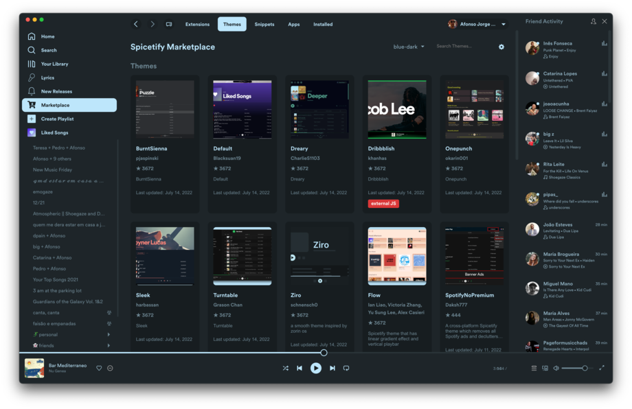
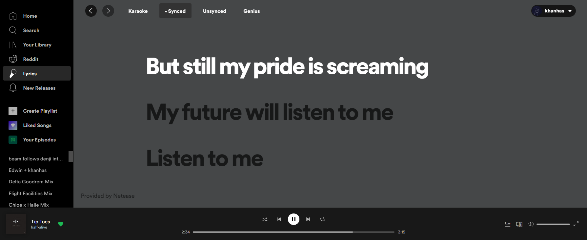
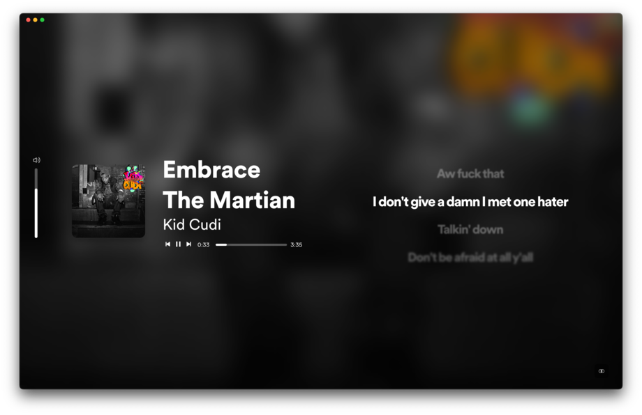
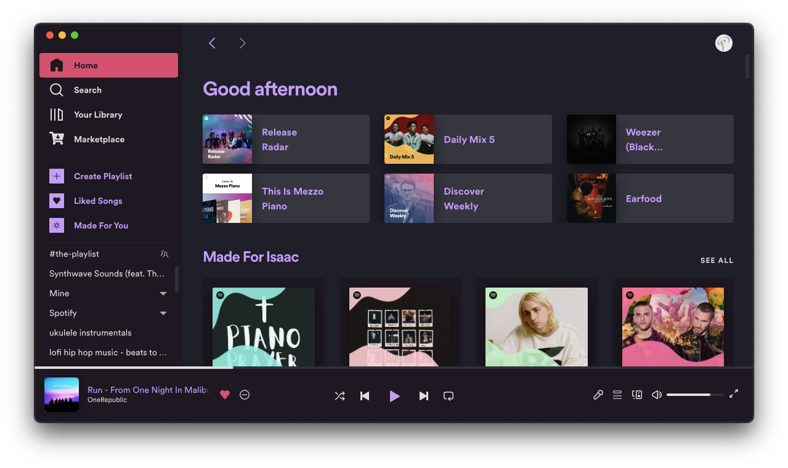
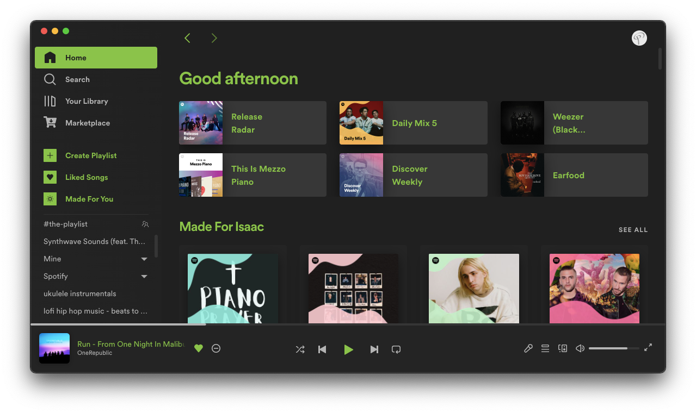
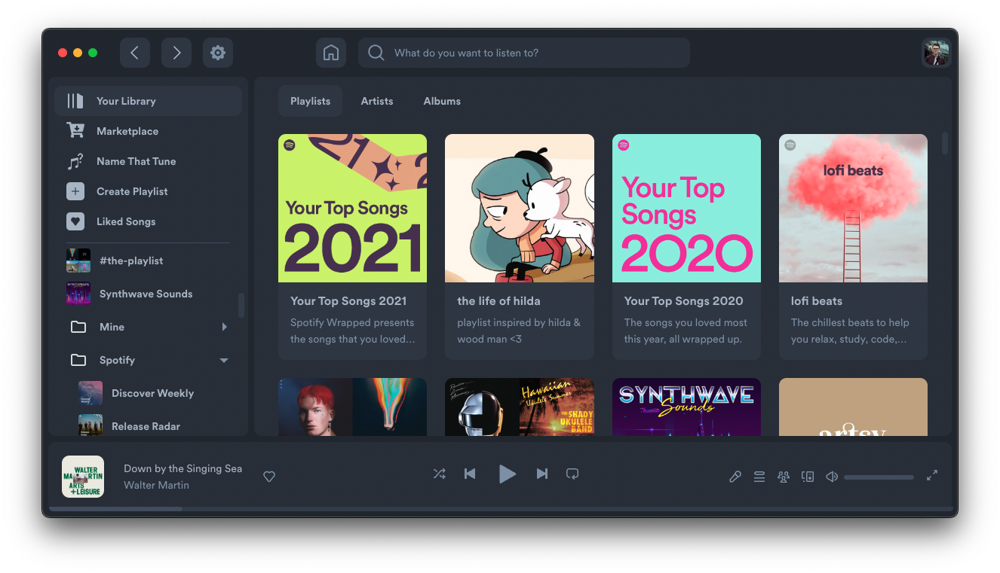
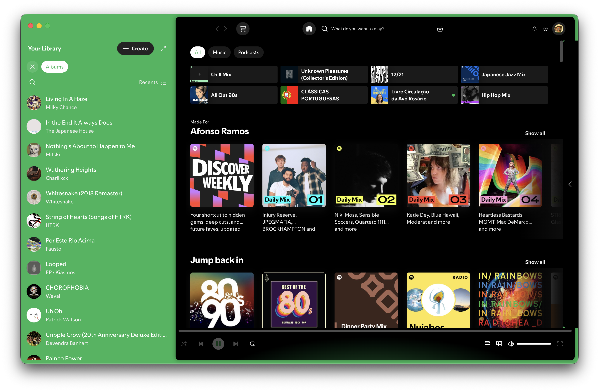
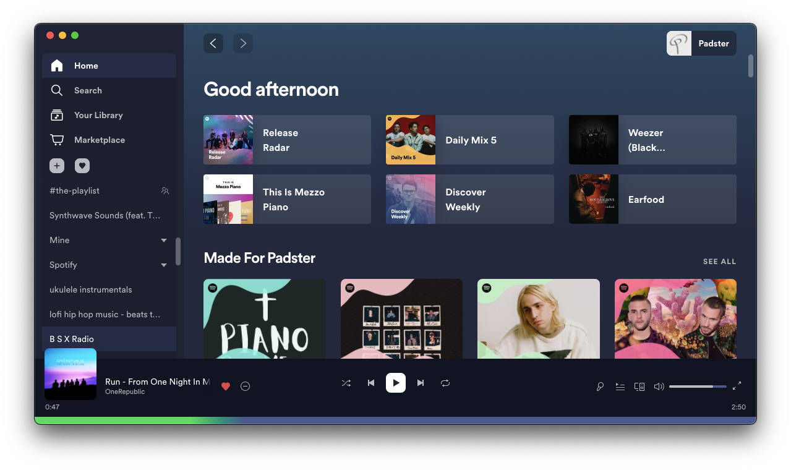
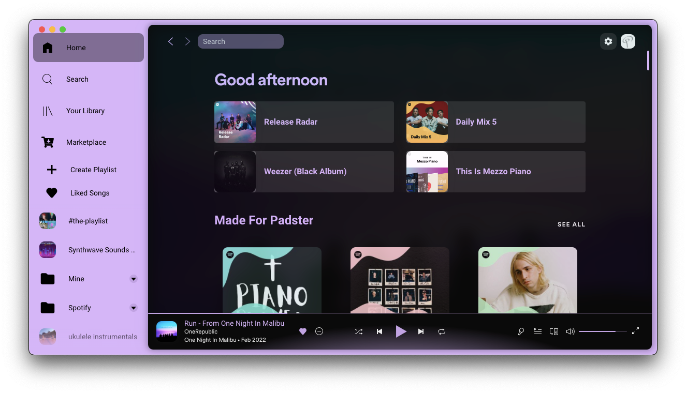
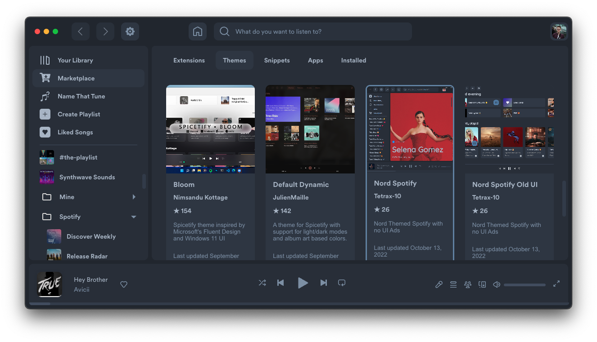

Temas
Colores, CSS, scripts y assets para cambiar la interfaz completa.
InstalarCLI independiente · Compatible con Marketplace
Tu Spotify, bajo cero. Temas, extensiones y reparacion automatica desde PowerShell.
iwr -useb https://raw.githubusercontent.com/SnoW-099/snowtify/main/install.ps1 | iex



Showcase
Una seleccion de temas comunitarios compatibles con Snowtify. La misma biblioteca, una base mas resistente.







Lo esencial
Colores, CSS, scripts y assets para cambiar la interfaz completa.
InstalarAtajos, controles y nuevas funciones conectadas al reproductor.
ExplorarLetras, estadisticas y paginas nuevas dentro del cliente de Spotify.
MarketplaceDetecta cuando una actualizacion borra la personalizacion y la aplica de nuevo.
snowtify repairInstala la CLI, conserva tu configuracion de Spicetify y vuelve a personalizar Spotify en pocos minutos.
Ejecuta PowerShell como usuario normal, no como administrador.
iwr -useb https://raw.githubusercontent.com/SnoW-099/snowtify/main/install.ps1 | iexEl instalador reutiliza %APPDATA%\spicetify, por lo que tus temas, extensiones y ajustes actuales siguen disponibles.
Crea una copia limpia de Spotify y aplica la personalizacion.
snowtify backup applyComprueba el estado, reconstruye el backup si hace falta y reinicia Spotify.
snowtify repairDescarga la ultima release desde el canal independiente de Snowtify.
snowtify updateEl instalador ofrece Marketplace y mantiene el alias de compatibilidad que necesita.
Dentro de Spotify podras instalar temas y extensiones comunitarias igual que con Spicetify. La API interna Spicetify.* se conserva deliberadamente.
La referencia rapida para el uso diario.
snowtify applyAplica la configuracion actual.snowtify repairRepara y reaplica tras una actualizacion.snowtify updateActualiza Snowtify.snowtify restoreDevuelve Spotify a su estado original.snowtify configMuestra o modifica la configuracion.Soluciones cortas antes de abrir una incidencia.
Ejecuta snowtify repair. Si Spotify cambio demasiado, actualiza primero con snowtify update.
Desactiva temporalmente el ultimo tema o extension que instalaste y ejecuta snowtify apply.
No encontramos esa parte de la guia.
Capturas de producto adaptadas de spicetify/docs bajo LGPL-2.1.